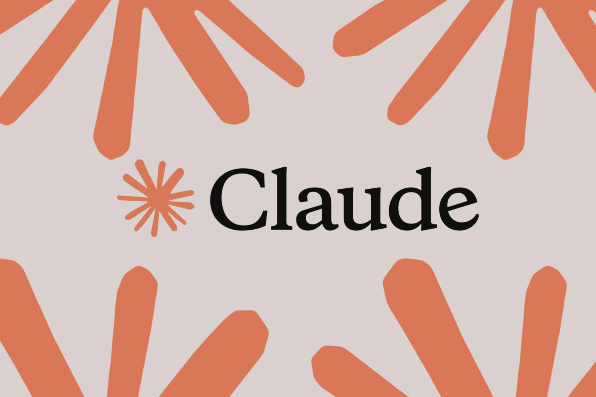

21 октября Anthropic объявила об открытии исследовательского превью Claude Duet — нового приложения, где ИИ работает не как чат-бот по запросу, а как proactive-агент. Компания позиционирует его для профессионалов и владельцев малого бизнеса: агент сам приходит с тем, что требует внимания, выполняет поручённые задачи, продолжает работу, пока пользователь отошёл, и сверяется с хозяином перед действиями от его имени. Доступ — по листу ожидания, пока только для подписчиков тарифов Pro и Max в США.
Duet построен на Claude Opus 5.5 и наследует память, навыки и подключённые приложения обычного Claude. Каждое утро агент присылает короткий дайджест самого важного по всем подключённым сервисам, а в течение дня пишет только когда что-то действительно требует внимания. Задачи можно отдавать любые — от планирования встреч до сборки дашбордов с десятками инструментов, финансовых прогнозов, прототипов и целых веб-приложений. Для этого у агента есть собственная виртуальная машина с браузером.
Перед крупным шагом — отправить платёж, что-то удалить — Duet обязательно спрашивает разрешение. Для работы с чувствительными данными Anthropic добавила отдельный классификатор и защитный системный промпт, которые отсекают запросы на передачу информации строгого уровня, например номеров банковских карт. При этом компания сама предупреждает: версия ранняя, агент «может неверно прочитать переписку или неправильно оценить срочность», а с личными поручениями вроде покупки билетов справляется слабее.
Выход Duet продолжает гонку персональных агентов: за последние месяцы собственные агентские продукты показали и другие крупные лаборатории, и теперь Anthropic впервые вынесла агента в отдельное приложение с проактивной моделью поведения — не жди вопроса, а сам предложи и сделай. Именно эта модель — агент, который действует автономно, но с контрольными точками у человека — сейчас главный полигон для всей индустрии: она же и главный источник новых рисков, о которых сами лаборатории честно пишут в ограничениях превью.